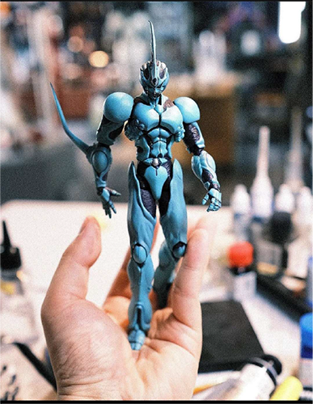

Vexel Trace
Fall 2023
Adobe Illustrator
Original Photo taken by instagram user @gcollectus: https://www.instagram.com/p/Cgx6MNmvQu8/.
Challenge: Find a photograph, trace the central object using Adobe Illustrator, and use illustrators tools to enhance the center object into a composition.
Process: As I was looking for photos for this in class excersize a good source for me to check was my instagram, on it, I found a post from Instagram user gcollectus featuring a figure of the fictional character Guyver from the manga of the same name by Yoshiki Takaya. That is when I got the idea to tranform the photo from a picture of a figure of Guyver to a vector depiction of Guyver in the cosmos.
Photo credit goes to @gcollectus:
Original PostNow that I had my photo I put it into Adobe illustrator and begun the tracign process, once the trace of all the shapes of the central figure was complete, I moved on to transforming the piece first by adding shading to the piece through the use of illustrator's mesh tools. Once I was doene adding shading to the trace, I then created a simple background meant to represent the cosmos using illustrator's gradient tools.